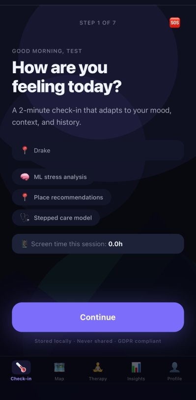
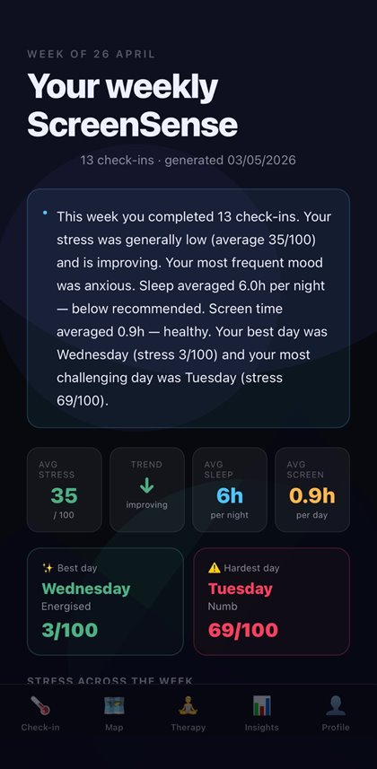

Final-year project · First
ScreenSense
my favourite project, and it got a first
A mobile app that checks in on how you're feeling, spots patterns in your mood and screen time, and suggests small, realistic things that might help. I didn't want it to be just another mood diary.
- App built in React Native with TypeScript
- Python backend running three machine learning models
- Properly tested, with 37 automated tests and feedback from real users
- Designed with privacy and safety first